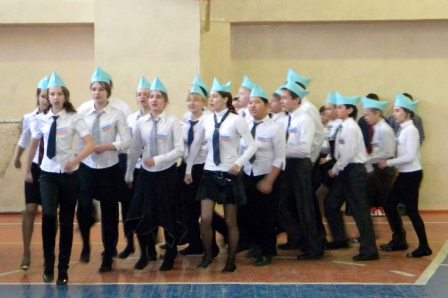
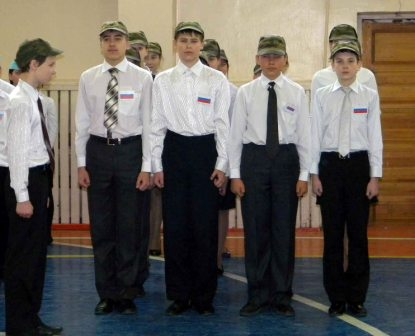
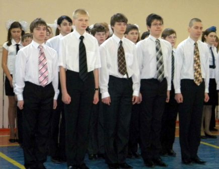

Конкурс инсценированной патриотической песни
«Войну хорошо слышать, да тяжело видеть»
В нашей гимназии состоялся долгожданный конкурс инсценирование патриотической песни, посвященный празднику Защитника Отечества. Идея конкурса возникла неспроста. Ведь, именно песни военных лет способствуют формированию патриотизма и повышают авторитет защитников Отечества, а также развивают интерес к историческому прошлому.
В конкурсе принимали участие параллели 10 и 11 классов. Каждая команда должна была выбрать свою военно-патриотическую песню. Ребята ответственно отнеслись к конкурсу. Все старались удивить жюри и зрителей, а также подарить им хорошее настроение. Концерт прошел в дружеской обстановке. Некоторые классы показали сцены боя, многие просто станцевали, а кто-то даже и передал все этапы Великой Отечественной войны.
3 почетное место заняли ученики 11 Б с песней Любэ – Березы. «Они хорошо передали настроение мелодичной песни актуальной теме родины», - как отмечает председатель жюри Елена Геннадьевна. «10 В решил буквально инсценировать «На поле танки грохотали» и это смазало общее впечатление. Хотя пели ребята очень хорошо» - продолжила Елена Геннадьевна. И поэтому 10 В с яркой, артистической программой заняли 2 место. А 1 место заняли сразу два класса – 10 А с композицией Булата Окуджавы – «До свидания, мальчики» и 10 Б с песней «Журавли». По мнению жюри, именно 10 А класс показал ту грусть несправедливого боя, правильно передав все этапы от начала до победы в Великой Отечественной войне. А у 10 Б была эффектная композиция с очень красивой, сложной песней. Двум классам удалось передать все тяготы военной поры. Все ребята молодцы!
Прус Екатерина, 10А
Конкурс-смотр "Песни и строя"
4.02 состоялся конкурс-смотр "Песни и строя", посвящённый дню защитника Отечества. Его участники – учащиеся 7-х классов. Оценивать конкурс помогал настоящий капитан-лейтенант. На смотре обучающиеся показывали знания строевых команд, умения маршировать строем и петь патриотические песни. Абсолютным победителем конкурса стал взвод 7 б класса. Они показали лучший результат в марше и собранности взвода. Призёром смотра "Песни и строя" стал взвод 7а класса. Командир взвода лучше всех сдала рапорт. 3-е место честно заслужил взвод 7 г класса.Власенкова Валентина, 7А
.jpg) |
 |  |  |